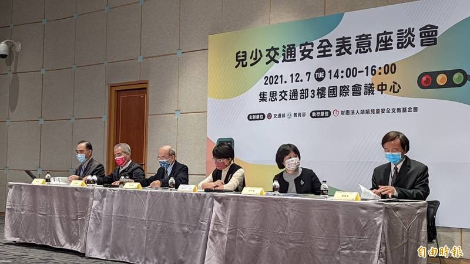
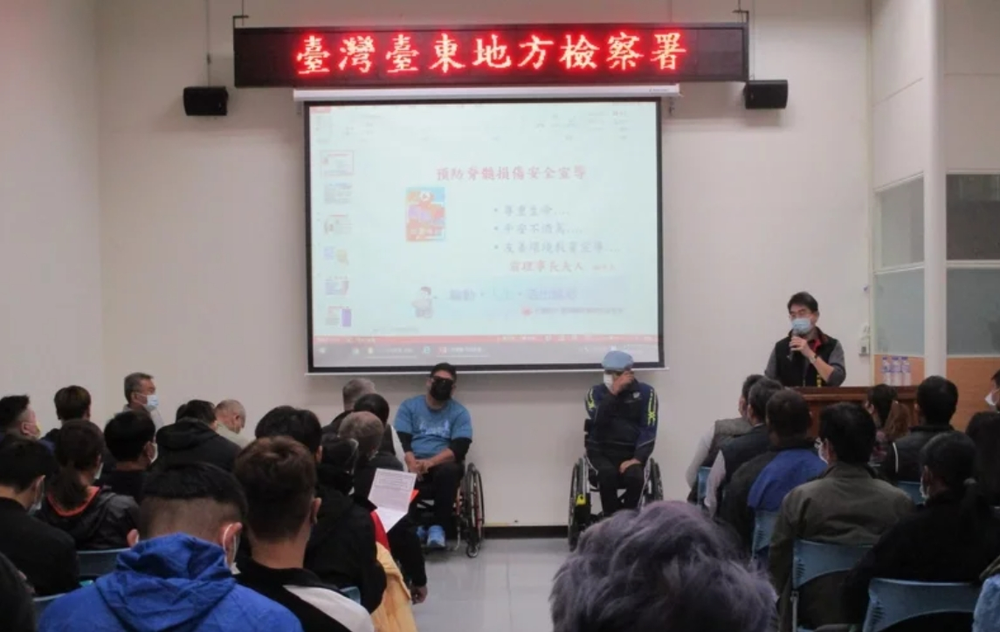
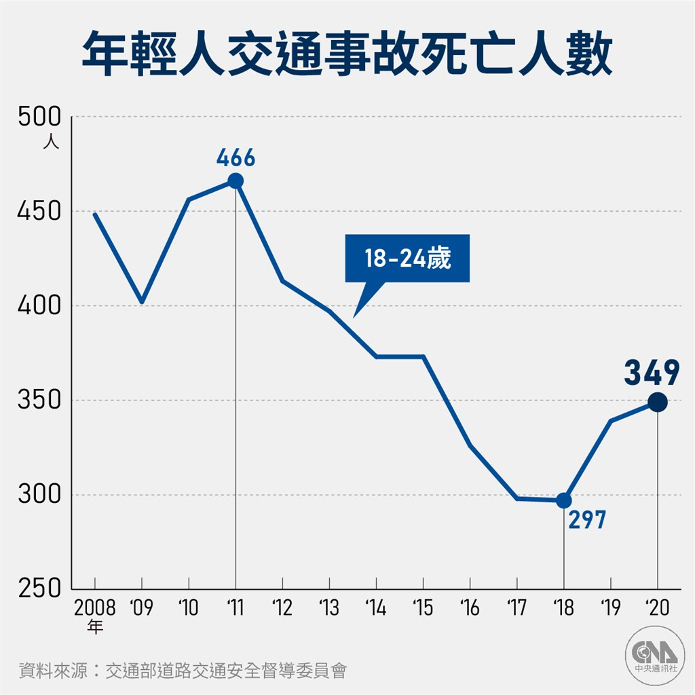
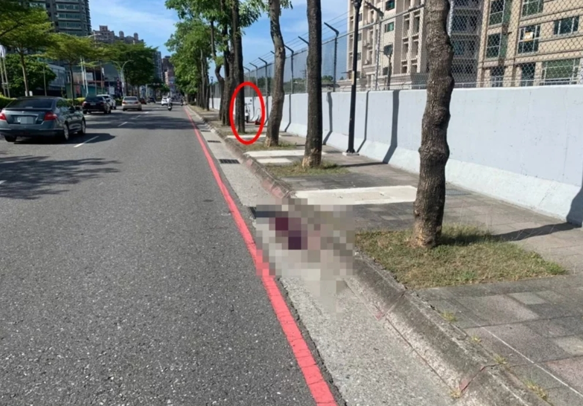

今年1-9月交通事故81未成年死亡 交通部辦座談會與兒少對話
〔記者鄭瑋奇／台北報導〕交通安全是所有民眾日常生活都要面對的問題，根據交通部統計，去年交通事故造成2972人死亡，今年1月至9月已導致2186人死亡，當中未滿18歲的青少年族群有81人，較去年同期成長9人。為了解青少年族群對交通安全認知，及讓政府與兒少雙方對於兒少安全交通議題能有效溝通，交通部今舉辦「兒少交通安全表意座談會」，與各縣市兒少代表共同討論兒少交通安全...... 進入新聞網頁

22歲酒後試車從此坐輪椅 白頭的他用親身經歷勸誡
「22歲和朋友酒後試新車發生車禍，從此坐上輪椅，現在頭髮都白了！」脊髓協會前理事長王建和、理事長邱凱倫等人，日前出席台東地檢署法治暨生命教育活動，分享當年酒駕造成脊髓受傷的痛苦經驗，呼籲眾人切勿酒駕、珍惜生命及健康體魄...... 進入新聞網頁
銅鑼青少年雙亡車禍 疑機車闖紅燈釀禍
苗栗縣銅鑼鄉128縣道、台13線公路竹森橋路口今天凌晨發生機車與曳引車碰撞事故，騎乘普通重機的2名青少年都傷重不治，其中一名死者是家住三義的14歲傅姓國中生，另一名年輕男子身份不詳，警方根據路口監視器畫面，初步研判當時機車疑似闖紅燈釀禍，車禍原因及責任待檢警調查釐清......進入新聞網頁
機車事故年奪數百性命 加劇台灣少子化國安危機
每一條在公路上流失的生命都令人感到惋惜，在因少子化呈現人口負成長的台灣，與年輕人騎乘機車相關的傷亡事故居高不下，尤其讓人心痛，而且這種現象相當程度加劇了人口老化的國安危機...... 進入新聞網頁
北市取締未成年無照駕駛逾2000件 最高罰1萬2千元
根據交大統計，截至今年1月至7月止，已取締2078件未滿18歲無照駕駛案件，且部分青少年還有闖紅燈、行駛公車專用道等違規行為，顯見未成年無照駕駛行為除不熟悉交通安全規則外，也缺乏安全防禦駕駛觀念，進而造成嚴重交通事故及傷亡...... 進入新聞網頁
暑假結伴夜遊 14歲國中少女騎機車自摔命喪淡水
新北市淡水區今天清晨發生死亡車禍，幾名青少年疑似騎機車到北海岸夜遊，天亮返家途中發生意外，其中14歲方姓少女疑因精神不濟，在淡水區中正東路2段往台北方向擦撞路旁人行道自摔，雖然馬偕醫院就在不到500公尺外，緊急送醫仍回天乏術......進入新聞網頁
16歲女未戴安全帽無照騎車 小屁孩按喇叭叫囂被逮
新北市新莊警方今天凌晨攔下16歲劉姓少女，涉嫌無照騎車而且未戴安全帽，員警將少女與後座同伴一起帶回警局開罰。沒想到，少女另外的同伴，竟騎車在派出所前長按喇叭，口出三字經挑釁。員警開車追出，循線逮獲5人。除了依妨害公務（侮辱公署）罪嫌法辦，也開出包括未成年無照騎車、遮掩車牌、未戴安全帽、逆向騎車等罰單...... 進入新聞網頁